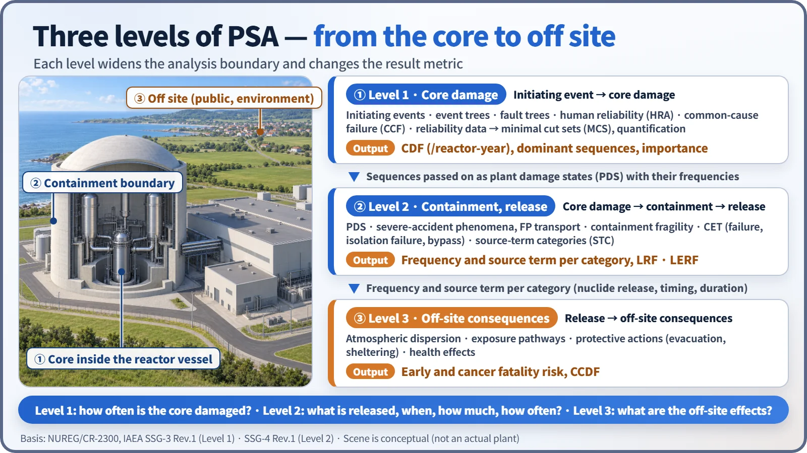
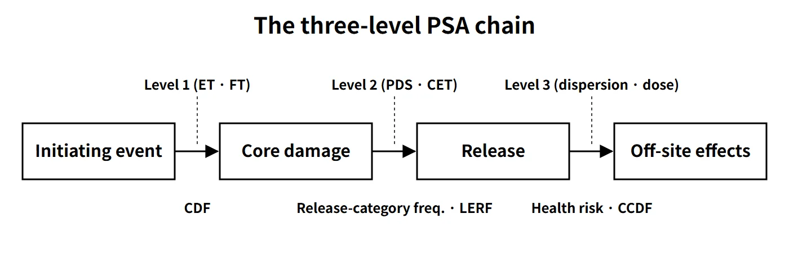

Probabilistic Safety & Reliability · C-PR-001
Probabilistic Safety Assessment (PSA) — Scope, Steps and Outputs of Levels 1, 2 and 3
Frequency times consequence, followed from initiating event to core damage, release and off-site effects, with a worked Level 1 teaching example.
Probabilistic safety assessment (PSA) systematically identifies the accident sequences that can occur at a nuclear power plant, quantifies their frequencies and consequences, and evaluates risk as the sum of frequency × consequence.
It answers three questions — what can go wrong, how often does it happen, and what are the consequences? It does not replace deterministic safety analysis, which relies on conservative assumptions and the single-failure criterion; it complements it.
Principle and mechanism
Where the three levels begin and end
PSA follows a single accident through three levels, widening the boundary each time. The division was set out in NUREG/CR-2300 (1983), and IAEA safety guides use the same framework.
| Level | Scope of analysis | Main outputs |
|---|---|---|
| Level 1 | Initiating event → core damage | Core damage frequency (CDF, per reactor-year), dominant accident sequences, minimal cut sets (MCS), importance measures |
| Level 2 | Core damage → containment behavior (failure, isolation failure, bypass) → release to the environment | Frequency by failure mode, conditional containment failure probability, frequency and source term by source-term category (STC), LRF and LERF |
| Level 3 | Release to the environment → off-site consequences | Individual and collective dose, early and cancer fatality risk, land contamination, complementary cumulative distribution function of consequences (CCDF) |

Level 1 — CDF from event trees and fault trees
- Initiating-event analysis: list LOCAs (by size), transients, SGTR, loss of offsite power, ISLOCA and so on; group those with the same mitigation requirements and assign frequencies.
- Event trees (ET): place the mitigating functions needed after the initiator as headings and develop the accident sequences through success/failure branches. Success criteria are set by thermal-hydraulic analysis.
- System fault trees (FT): take the failure of a heading as the top event and develop it through logic gates down to component failures, test and maintenance unavailability, and support-system dependencies.
- Human reliability analysis (HRA) and common-cause failure (CCF): bring operator-action failure probabilities and the simultaneous failure of redundant components into the model.
- Reliability data analysis: update generic data with plant operating experience (Bayesian updating) to obtain failure rates and unavailabilities.
- Accident-sequence quantification: combine the ETs and FTs to obtain the MCSs (initiator frequency × product of basic-event probabilities), and sum the MCS frequencies using the rare-event approximation to get CDF = Σ fIE × P(core damage | IE). Branch probabilities are conditional probabilities that reflect support-system, shared-component and HRA dependencies. Importance, sensitivity and uncertainty analyses follow (Monte Carlo; mean and 5th/95th percentiles).
Importance measures are central to how PSA is used. FV = [R − R(q=0)]/R is the fraction of risk from sequences containing that basic event; RAW = R(q=1)/R is how many times the risk increases if that component is certain to fail. In screening for risk-significant components (NEI 00-04 and others), FV > 0.005 or RAW > 2 is commonly used as the candidate criterion.
![Teaching example of Level 1 quantification: an event tree for a small LOCA at 1.0×10⁻³ per year with headings HP safety injection (failure 1.0×10⁻³) and HP recirculation (failure 2.0×10⁻³) giving core-damage sequences S2 at 2.0×10⁻⁶ and S3 at 1.0×10⁻⁶ per year, a fault tree for the injection failure with an OR gate over common-cause failure, independent pump failures, auto and manual start failure and a suction or common valve failure, and a card giving a CDF contribution of about 3.0×10⁻⁶ per year, FV about 0.67 and RAW about 330 for recirculation function B](../../assets/images/concepts/c-pr-001-psa-levels/fig2-level1-quantification.webp)
Level 2 — from plant damage states to release categories
- Plant damage state (PDS) analysis: group the core-damage sequences by initiator type, RCS pressure at vessel failure, safety-injection and spray status, and isolation/bypass status, linking Level 1 to Level 2.
- Severe-accident phenomena and containment performance: analyze hydrogen combustion, DCH, MCCI and overpressure with codes such as MAAP, and compare the loads with the containment fragility curve.
- Containment event tree (CET): quantify branch probabilities with bypass, isolation, early and late failure, and basemat melt-through as headings. A release can occur through isolation failure or bypass even without structural failure.
- Source-term category (STC) analysis: group the end states by release timing, magnitude, path and scrubbing (also called release categories) and define representative source terms.
- Sensitivity and uncertainty analysis: because the phenomenological uncertainty is large, vary the branch-probability assumptions to test how robust the results are.
The LERF (large early release frequency) produced here is the frequency of a large release before the public can be evacuated.
Level 3 — off-site consequences
The source term of each release category from Level 2 is combined with site meteorology, population distribution, protective actions such as evacuation and sheltering, and exposure pathways to calculate atmospheric dispersion, dose and health effects (MACCS and similar codes). Results are given as individual early and cancer fatality risk and as consequence CCDFs. The IAEA has safety guides for Levels 1 and 2 (SSG-3 and SSG-4) but no dedicated Level 3 safety guide yet.
What it means in a plant
Scope: plant operating states and event sources
| Category | Content | Characteristics |
|---|---|---|
| Full-power PSA | Initiating events during rated-power operation | The oldest and most refined models |
| Low-power and shutdown (LPSD) PSA | Analysis by plant operating state (POS) during refueling outages | Key issues: loss of shutdown cooling, mid-loop operation, open containment |
| Internal-events PSA | Internal initiators such as equipment failures and operator errors | Fire and flooding are sometimes analyzed separately as internal hazards |
| External-events PSA | Earthquakes, high winds, tsunamis and floods, etc. | Hazard × fragility; large uncertainty |
The scope has recently widened to spent fuel pools and multi-unit PSA, and IAEA SSG-3 Rev.1 (2024) added multi-unit, passive-system and digital-system reliability.
Example results and uses
- Example (APR1400 US design certification PRA): full-power internal-events CDF about 1.1×10⁻⁶/yr, LRF about 1.0×10⁻⁷/yr, low-power and shutdown internal-events CDF about 1.8×10⁻⁶/yr.
- Uses: identifying design weaknesses and comparing alternatives, managing maintenance risk with a risk monitor, optimizing Technical Specification allowed outage times and test intervals, prioritizing accident management strategies, risk-informed regulation, and periodic safety reviews.
- Limitations: because of model completeness and the uncertainties in HRA, CCF and data — and the large uncertainty of external events — PSA is used mainly for relative comparisons and insights rather than absolute values.
Regulatory and design criteria
The references below are international and US examples of how PSA methods and risk goals are defined.
| Basis | Key point |
|---|---|
| NUREG/CR-2300, NUREG-1150 | PRA procedures guide; risk assessment of five US plants |
| US RG 1.200, RG 1.174 | PRA technical adequacy; acceptance guidelines for risk-informed changes |
| IAEA SSR-2/1 Rev.1, SSG-3 Rev.1, SSG-4 Rev.1 | PSA requirements in design; Level 1 (2024) and Level 2 (2025) guides |
CDF 10⁻⁴/yr (existing plants) and 10⁻⁵/yr (new plants) are INSAG-12 targets. For large releases INSAG-12 gives no number but says "at least a factor of 10 below CDF for existing plants, and practical elimination of large early releases for new plants". LERF 10⁻⁵/yr is the US RG 1.174 guideline value for operating plants; the 10⁻⁶/yr often quoted for new plants is not a LERF value but the US NRC large release frequency (LRF) guideline. These values are used as performance goals, not as limits written into the PSA guides themselves.
Easily confused pairs
| Deterministic safety analysis | PSA | |
|---|---|---|
| Question | Are the acceptance criteria met in design-basis accidents? | What are the frequencies and consequences of all accident sequences? |
| Assumptions | Conservative; single failure; loss of offsite power | Best estimate; actual failure rates and human errors |
| Result | Pass/fail | CDF, LERF, risk and uncertainty distributions |
LERF and LRF are separate metrics: LERF counts only large releases that occur early, before the public can be evacuated, whereas LRF counts large releases regardless of timing. CDF is not a probability but a frequency per reactor-year. The INSAG-12 CDF values (10⁻⁴/yr existing, 10⁻⁵/yr new) are targets, not regulatory limits.
Key points at a glance
- Definition: risk quantified as frequency × consequence of accident sequences; complements deterministic analysis.
- Level 1: initiating event → core damage; IE, ET, FT, HRA, CCF, data → MCS quantification → CDF.
- Level 2: PDS → phenomena analysis and containment fragility → CET → STC → LRF, LERF, source terms.
- Level 3: dispersion, exposure pathways and protective actions → off-site health risk and CCDF.
- Scope: full power / low power and shutdown (POS); internal / external (earthquake, tsunami); spent fuel pool and multi-unit.
- Uses: design improvement, maintenance risk and AOT, accident management, risk-informed regulation, PSR.
- Importance: FV and RAW (screening example FV > 0.005, RAW > 2).
- Goals: CDF 10⁻⁴/yr (existing) and 10⁻⁵/yr (new) per INSAG-12; for example, US RG 1.174 LERF 10⁻⁵/yr and NRC LRF 10⁻⁶/yr.
- Terminology: internal/external usage varies (fire and flooding are sometimes called internal hazards), so state the definition being used.
